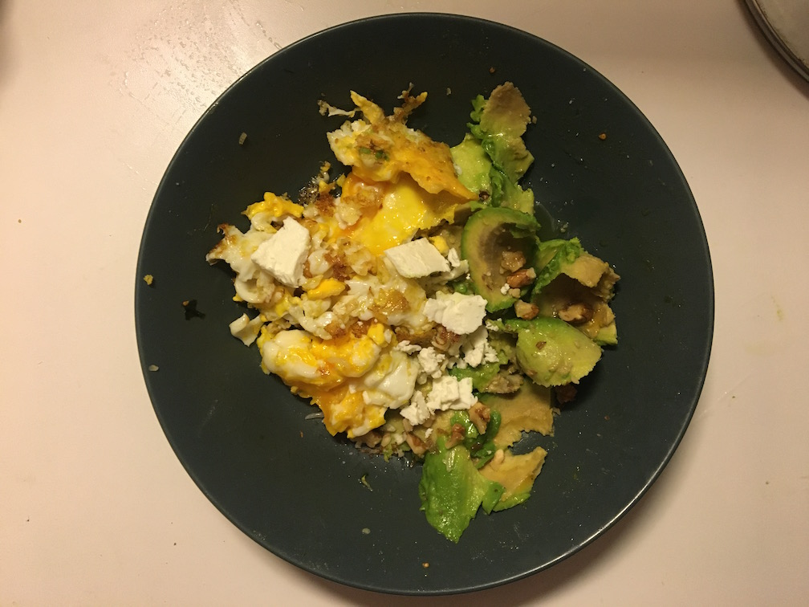

Breakfast salade

Descrition
La breakfast salade, petit dej gastronomique. Simple, mais riche en saveurs.
Ingredients
- 1 avocat
- 2 oeufs
- 3 cerneaux de noix
- quelques tomates cerises
- quelques copeaux de feta
- une echalotte bien emincee
- sel de guerande
- huile d'olive
Steps
- faire brouiller les oeufs a la poele et faire du beau travail
- decouper l'avocat en une dizaine de morceaux
- decouper les tomates cerises en 3 morceaux chacune
- decouper de tout petits bouts d'echalotte avec un couteau
- mettre le tout dans une assiette genre petit wok
- saupoudrer de petis bouts de cerneaux de noix qu'on aura ecrases avec ses doigts, apres s'etre laves les mains
Back to main page